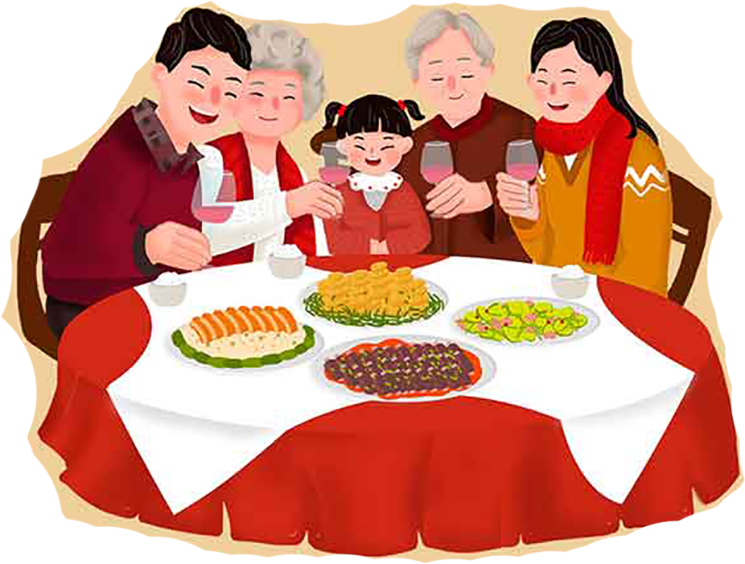

春节，即农历新年，是一年之岁首传统意义上的年节，俗称新春新年新发、岁日、年凌、大年等，口头上又称度岁、庆岁、过、年过大年。春节历史悠久，由上古时代岁首折年祭祀演变而来。万物本乎天、人本平祖，祈年祭祀，敬天法相，报本反始也。春节的起源蕴含着深邃的文化内涵，在传承发展中承载了丰厚的历史文化底蕴，在春节期间，全国各地均有举行各种庆贺新春活动，带有浓郁的各地域特色，热闹喜庆的气氛洋溢:这些活动以除旧布新、驱邪攘灾、拜神祭担、纳福析年为主要内容，形式丰富多彩，凝聚着中华传统文化精华。
百节年为首，春节是中华民族最隆重的传统佳节，它不仅集中体现了中华民族的思想信仰、理想愿望、生活娱乐和文化心理，而且还是折福攘大饮食和娱乐活动的狂欢式展示，受到中华文化的影响，世界上一些国家和地区也有庆贺新春的习俗。据不完全统计，已有近20个国家和地区把中国春节定为整体或者所辖部分城市的法定节假日，春节与清明节端午节中秋节井称为中国四大传统节，一批国家级非物质文化遗产名录。他会让你想起你的归途